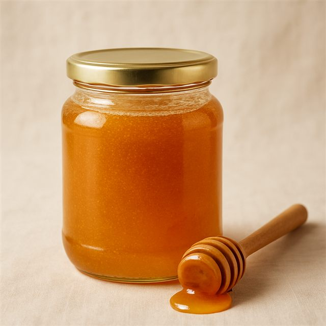

Сервис для мастеров и фермеров Казахстана
sauda-ai.vercel.app · github.com/Yerassul777/SaudaAI · @saudaai2026
Типичная карточка на казахстанских досках: два сухих предложения, тёмное фото. Покупатель листает дальше.
Дорого — не купят, дёшево — в минус. Рыночных ориентиров у продавца нет.
Покупатели ищут на казахском и русском. Утром рынок, вечером семья — писать тексты некогда.
Наш пользователь: сельский мастер или фермер 45+, который умеет делать — и не умеет (и боится) продавать в интернете.
субъектов МСП в Казахстане, ~70% — ИП (Минторговли РК)
рост продаж предприятия через 1,5 года после выхода на маркетплейс
пользуются банковскими приложениями: города против сёл ВКО и Жамбылской области — цифровой разрыв
Разрыв — не в желании продавать, а в навыках и инфраструктуре выхода на цифровой рынок. Ровно это чинит Sauda AI.
Фото на телефон. Стол на кухне вместо фотостудии — подойдёт.
Три вопроса — или голосом. Что это, из чего, для кого. ИИ понимает казахский и русский.
Готовая карточка. Заголовок и описание RU+KZ, теги, цена с объяснением, пост для WhatsApp, студийное фото.
Как банковская карта. Без почты, паролей и SMS — ноль барьеров для человека 60 лет.
Готовые форматы под Kaspi, OLX, Wildberries и WhatsApp — куда продавец уже ходит.
Пошаговые уроки «как для пятилетнего»: Kaspi, OLX, Wildberries, переписка с покупателем. После каждого — квиз с мгновенным разбором. Ноль затрат на ИИ: всё статическое.
Симулятор: продавец «выставляет товар» в интерфейсе площадки и отвечает на вопросы виртуального покупателя («Торг уместен?», «Почему так дорого?»). В конце ИИ разбирает переписку: оценка, что получилось, один совет. Прогресс копится в профиле.
Итог: продукт закрывает весь путь — от «боюсь интернета» до «продаю на трёх площадках сам».

Это фото сгенерировано нашей же функцией «студийное фото» — сайт оформлен собственным продуктом.
Себестоимость одной карточки — токены ИИ: ≈ 10–20 ₸. Хостинг и база — бесплатные тарифы до тысяч пользователей. Студийное фото — ≈ 40 ₸ за генерацию.
Бесплатно: первые 3 карточки — попробовать без риска.
Тариф ≈ 1 490 ₸/мес: безлимит карточек, студийные фото, тренажёр.
Дальше: партнёрки с площадками и обучающие курсы.
Активный продавец делает 10–30 карточек в месяц: себестоимость ≈ 300–600 ₸ при чеке 1 490 ₸. Маржа положительная с первого платящего пользователя.
Рабочий MVP в проде: карточки, цена, голос, фото, обучение, тренажёр, экспорт.
Пилот с ремесленными сообществами и акиматами регионов; SMS-подтверждение; публикация на площадки по API.
Каталог-витрина локальных мастеров, партнёрства с Kaspi/OLX, обучающая программа для сёл.
Продукт, разработка, ИИ-архитектура. Идея выросла из реальной боли: близкие продают на рынке и не могут выйти в онлайн.
Разработано с использованием ИИ-инструментов — и мы полностью понимаем и защищаем каждую строку кода (AI-комплаенс хакатона).
Sauda AI — карточка, цена и навык продаж из одной фотографии.
sauda-ai.vercel.app · github.com/Yerassul777/SaudaAI · @saudaai2026